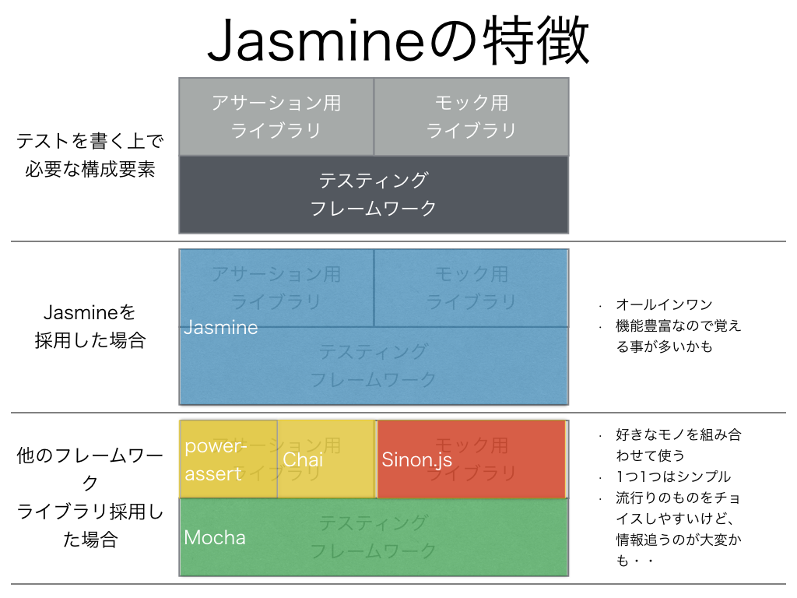
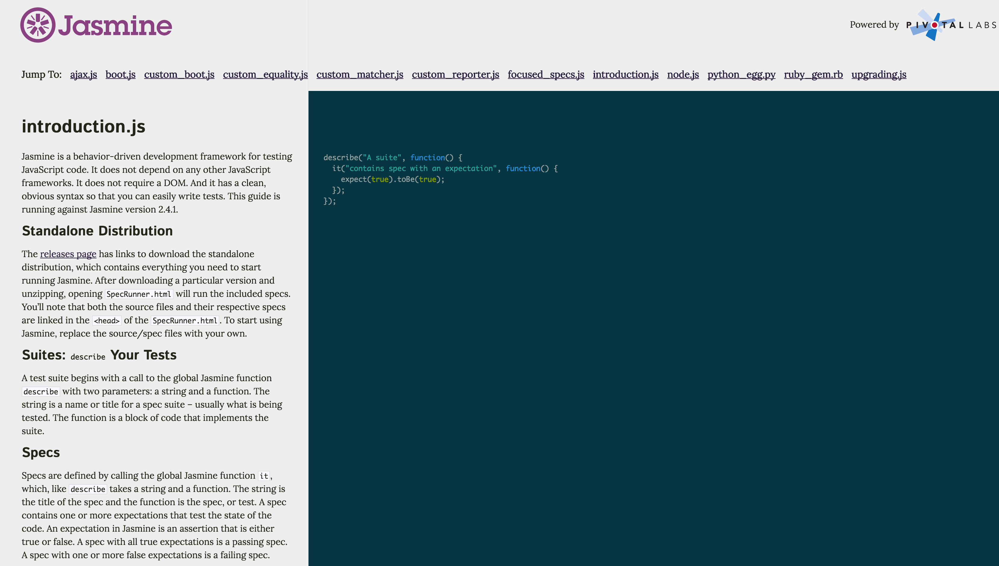
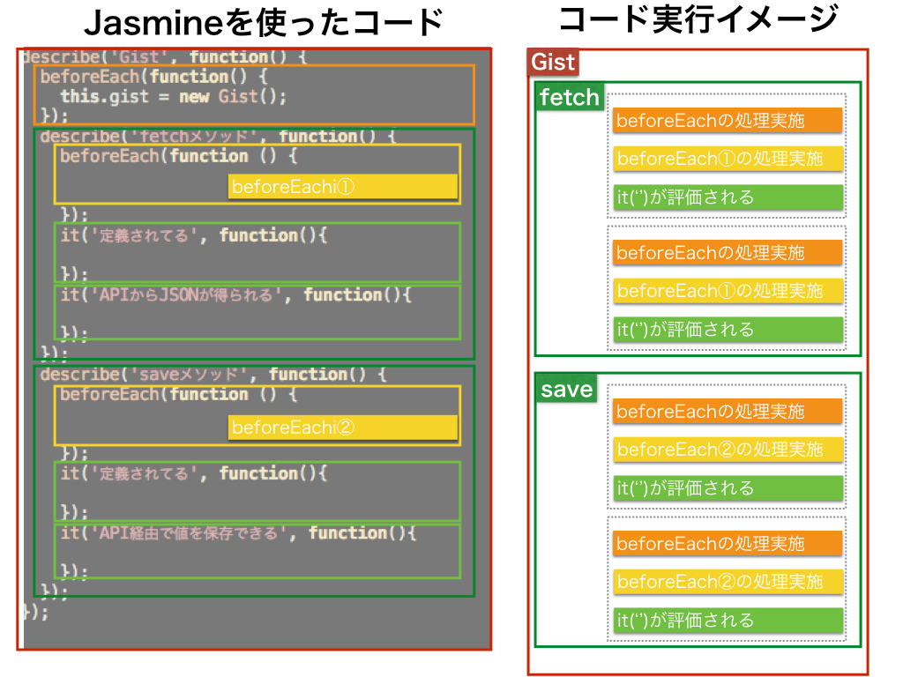

Jasmineの特徴
上記で簡単にですが、テストを書いて実行する上での構成要素について触れましたが、これを踏まえてJasmineの特徴をまとめてみます。
概念図

説明
図解してるようにJasmineはオールインワンなテスティングフレームワークなので、基本的にはこれを導入することで一通りのことが行えるようになります。
英語ですが以下のようにドキュメント自体もしっかりと整備されています。

上記ドキュメントを見てもらうとわかりますが、テストされた値の評価をする記法が豊富なので、初めてJavaScriptの単体テストを書く時にどこから手を付けて良いのか戸惑いやすいかもしれません。
Jasmineで書かれたコードの構造
Jasmineで書かれたコードは以下の様な構造になります。

ポイントになる所をいくつか説明します。
describe()やit()内のシングルクォート内で説明を書く
通常、Jasmineを使ってテストを書く状況というのは、クラス単位に処理を分割したコードに対して実際にテストを書くケースがほとんどかと思います。
その時に、どのクラスのどのメソッドに対するテストなのかというのをテスト結果で把握しやすくするために、describe()やit()内のシングルクォート内で説明を書いていきます。
describe('SomeClassについて', function() {
describe('xxx()メソッドについて', function() {
it('定義されてる', function(){
});
});
});
シングルクォート内の説明を英語で書くと、英語として自然な形で読める構造になるので理想的なのですが、慣れないうちは無理をして英語で書かず日本語でもいいと思います。
上記図解ではテストは4つ行われる
上記図解してるようなコードの場合だと全部で4つのテストが実行されることになり、it()で定義した内容が評価される構造になってます。
個々のテストを行う時に必要となる事前準備はbeforeEachなどを行う
また、複数のテストを定義する場合に、個々のテストで共通して行いたい処理（例：クラスの初期化処理や、特定のメソッドで必要となるテストデーターの生成など）が出てくることがほとんどかと思いますが、その場合には、beforeEach()という仕組みを活用します。
上記の場合には
- メソッド単位でクラスの初期化処理をしたい
- オレンジ色のbeforeEachの箇所
- fetch()、ならびにsave()のメソッド単位でも事前の準備をしたい
- 黄色のbeforeEachの箇所
- このようにしておくことでそれぞれのメソッド別にbeforeEachの処理を変更することが出来る
という形で使い分けしていきます
beforeEach以外にも似たような仕組みがある
一度だけ実施したい場合にはbeforeAll()というメソッドがあります。またテスト実行後に何か処理を行いたい場合にはafterEach()/afterAll()というメソッドがあります。詳しいことは公式ドキュメントを参照してください
Jasmineを採用する時の参考情報
個人的には、Ruby/RailsでRSpecを使ってテストを書く習慣がベースとしてあって、RSpecと似たような記法のJasmineは違和感がないのでずっと使ってます。
もしも周囲にJavaScriptのテストに詳しい人がいて、かつ、その人がJasmine以外のものを使い慣れてるのならそちらを使っても良いかと思ってます。
※最近はシンプルなpower-assertとmochaを組み合わせて使うのが流行りっぽいです